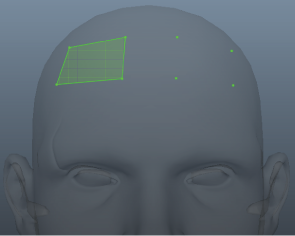
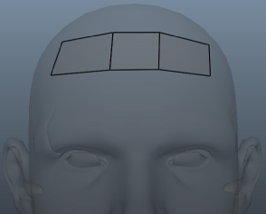

可以使用“四边形绘制工具”(Quad Draw Tool)以自然、有机的方式进行建模，这为重新拓扑网格提供了一个简化的单工具工作流。使用手动重新拓扑流程时，可以在保留参考曲面形状的同时，创建整洁的网格。

可以通过以下方式访问“四边形绘制工具”(Quad Draw Tool)：
- 单击
 ，访问建模工具包(Modeling Toolkit)窗口的“工具”(Tools)部分。
，访问建模工具包(Modeling Toolkit)窗口的“工具”(Tools)部分。
- 选择“网格工具 > 四边形绘制”(Mesh Tools > Quad Draw)，访问主菜单栏。
- 选择“四边形绘制工具”(Quad Draw Tool)（以打开标记菜单，按住 Shift 键并在场景中单击鼠标右键），访问标记菜单。